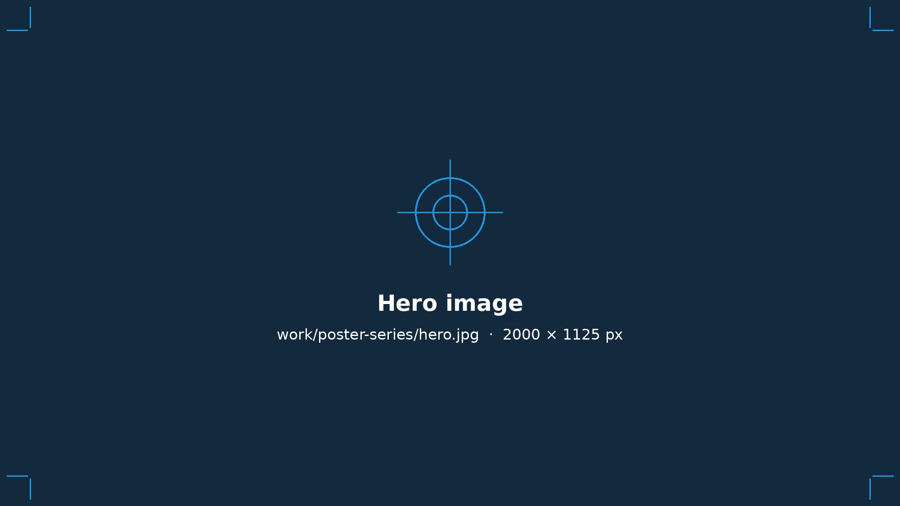
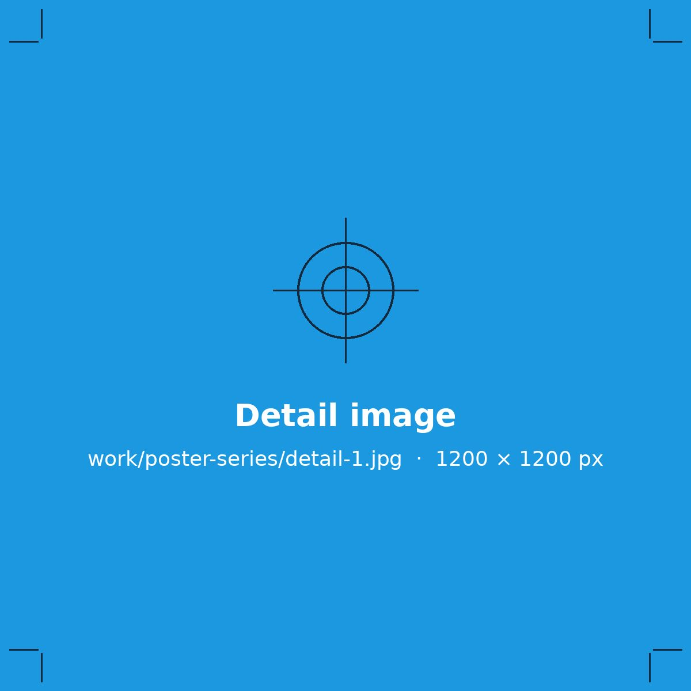
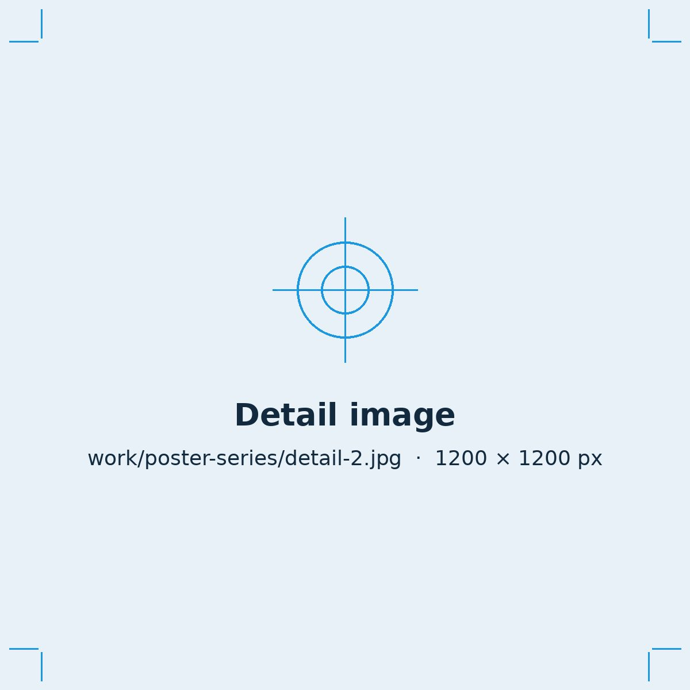
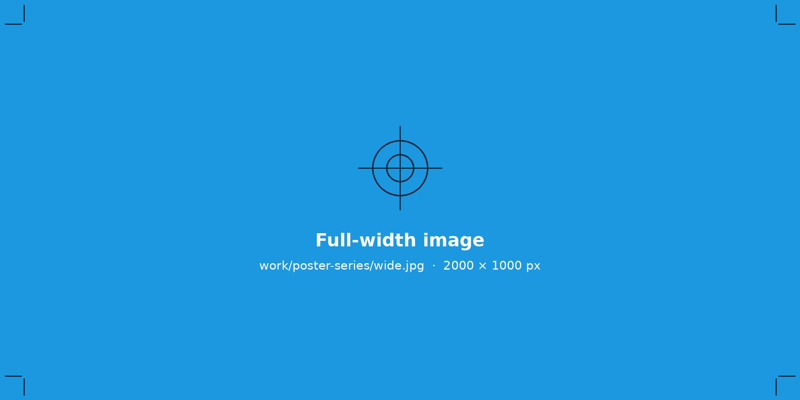

Poster Series
A typographic poster series designed as a set and produced for print.

The Brief
Use this space for a short summary of the project: who it was for, what they needed, and any constraints you worked within, such as budget, deadline, print method or existing brand rules.
Two or three sentences is plenty. Hiring managers skim, so lead with the problem you were solving.


Process
Walk through how you got from the brief to the final design. Mention the directions you explored, how client feedback shaped the work, and the decisions that mattered most.
Sketches, early concepts and revisions make strong supporting images here.
Production
This is where your prepress experience shows. Note how the files were set up for output and anything you did to keep color and quality consistent on press.
- SubstrateMaterial or stock
- Print methodDigital, offset or large-format
- ColorCMYK, spot colors or color match
- FinishLamination, coating or die-cut

Result
Close with the outcome: what was delivered, how it was received, and any measurable results, such as quantities produced, a launch date or client feedback.